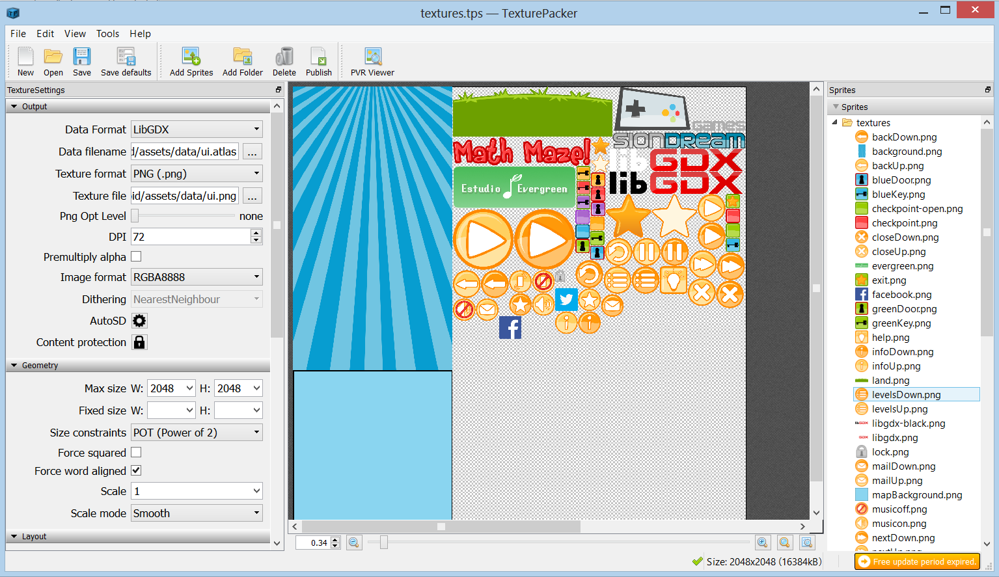
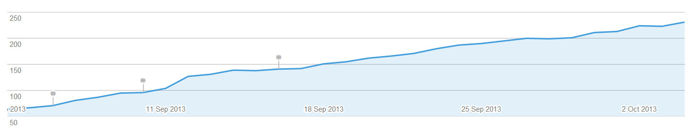
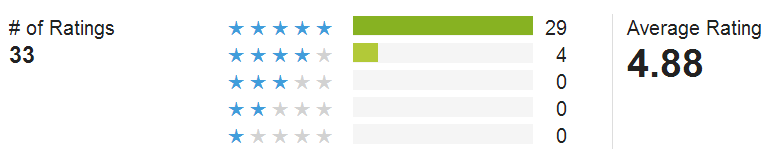
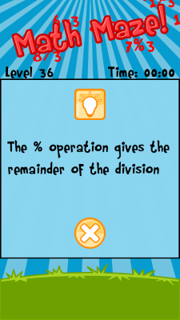
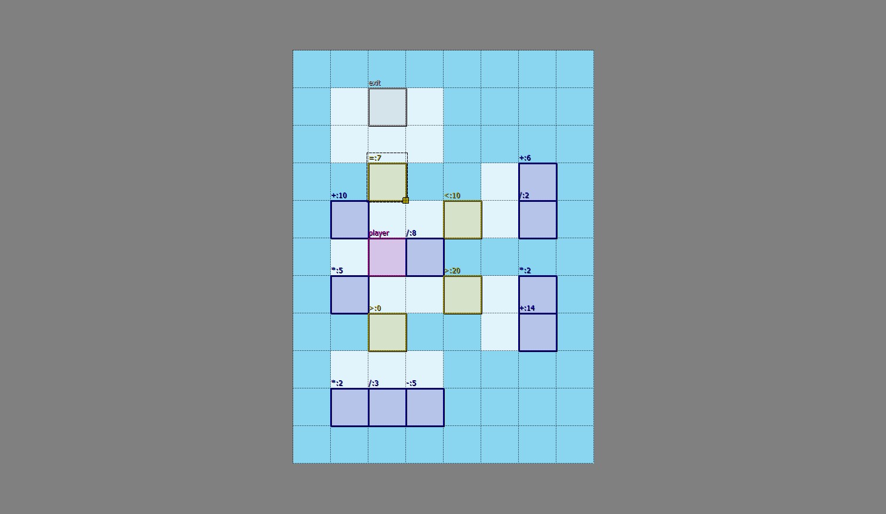
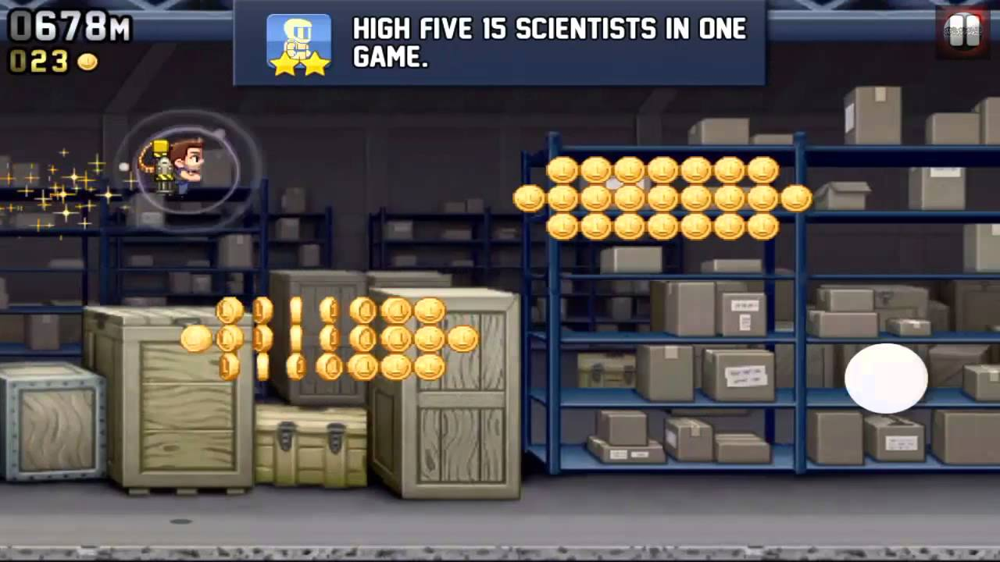
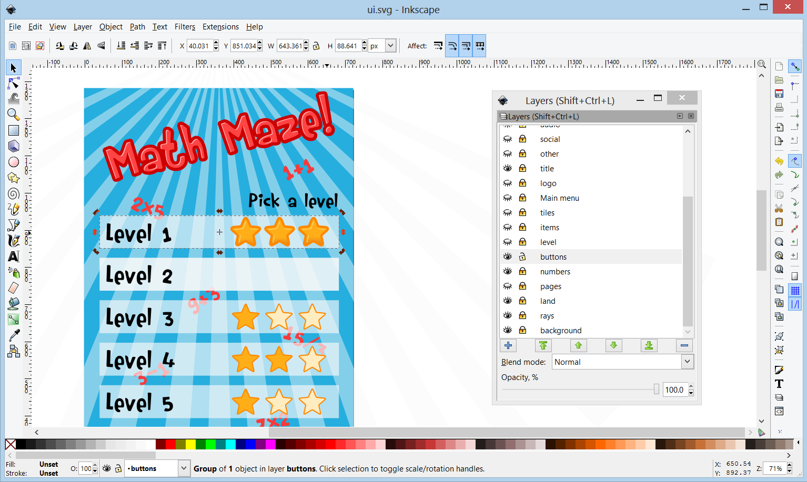

Math Maze postmortem
Oct 7, 2013 · CommentsGames development
After approximately 5 months of work, Math Maze went live on Google Play on September the 2nd, so I thought a little postmortem was in order. For those who are not aware, Math Maze is a very simple brain teaser math based game.
The player has to move a purple block across a labyrinth towards the exit. However, there are numerical conditions blocking the way. In order to traverse them, the purple block has to combine itself with operations. I can imagine you”re deeply confused by now, so please check the trailer to see what’s the deal.
Technologies, tools and team
Technologies:
Tools:
- Eclipse
- Inkscape for all the graphics
- Tiled as a level editor
- TexturePacker to optimise textures * Adobe Flash and Adobe Premiere to produce the trailer
Most of the time I worked on my own but, luckily enough, I got help from a bunch of people in areas such as localisation, SFX (Ross Tregenza) and OST (Evergreen Studio).

Downloads, ratings and press coverage
Despite the fact of having worked hard on PR, its non existence price barrier and the complete absence of adverts, Math Maze has a negligible download count. Don’t get me wrong, I didn’t have delusions of grandeur for the game, but I”d have hoped something slightly better to be completely honest.
Here’s a chart showing the current user installs over time, each pin corresponds to one of the app updates released up until now.

On the other hand, reviews and ratings have been quite positive. 33 people rated the app giving it an average of 4.88 stars. Judging by feedback I got from reviews and emails, users seemed to like the core mechanic as well as the music and the overall simplicity of the game, which was very nice to read. I hugely appreciate the fact that people went through the trouble of contacting me.

Along Math Maze, I also released a pressKit() site and the trailer you saw at the start of the article, which took me ages to put together. After reading tons of articles about PR and how to approach the press, I proceeded to do so. My target audience are kids and their parents who would presumably introduce the former to the game. That’s why I sent dozens of emails to educational and indie games websites as well as schools in the East Midlands area.
It didn’t help much, though.
Repository progress
Here’s a video illustrating the progress of Math Maze’s Git repository during development. For those interested, it’s rendered using Gource, an open source project that grabs your Git history and creates an interactive time lapse using OpenGL. Truth be told, it doesn’t provide a great deal of useful information, but hey, it’s really pretty!
What went wrong
Localisation
Math Maze is mostly for kids and I wanted it to reach as many territories as possible, so localisation was pretty much mandatory. I wrote a simple LanguageManager that grabs the system’s locale strings from a CSV file, so they would be easily editable by potential contributors (let it be with Excel or Calc). A neat Python script would scan the project directory in search of strings that needed localising using regular expressions so as to generate the CSV templates.
Math Maze ended up being localised to English, Spanish, German, French, Romanian, Finnish, Portuguese and Polish.
I was very happy with the system, it was clean, fast and, overall, made me happy.
However, I missed one tiny but painful detail. I could only maintain the English and Spanish languages, so adding new strings in subsequent app updates ranged from tricky to impossible. Next time I shouldn’t translate such a simple project to so many languages in order to retain more control over future content.
Marketing
With Math Maze I had the goal of learning the basics of PR and games. Despite the fact that such goal could be considered met, Math Maze didn’t do well in the media at all. Basically, nobody cared.
I read so many articles and presentation on how to approach the press and pretty much followed their advice.
- Make a trailer: I”m no film director and I did what I could, but I think the result is acceptable. * Carefully choose your target: only emailed small indie games and parenting sites as well as schools. * Tidy and up to date pressKit(). * Links to download and trailer always on sight. * Personalise every single email, be friendly but polite. * Come up with a hook: AI programmer in the AAA industry working on free mobile titles for kids on his spare time. * Use Twitter and Facebook. * …
You get the gist of it.
In the end, only The Android Parent and AndroidTapp seemed to pay Math Maze any attention, for which I”m truly grateful. As for the rest, I honestly don’t know the reasons behind the lack of interest. The scope was tiny but I believed in the game’s quality. I should probably analyse this one more deeply and carefully. If you”re reading this and have any suggestions, by all means, leave a comment with your ideas.
Tutorial
Early in development, some people started to point out that the game lacked a tutorial to explain the core mechanics. To address that issue I just added some help text at the beginning of each level where a new concept was about to be introduced. Although this did the job, I should have worked harder on a completely integrated in game tutorial system that relied more on icons rather than text.

Content generation
Level creation was exclusively data driven and required zero programming work. However, the ratio between the time it took me to make a full level over an average user finishing it was ridiculously high. This made content generation a lengthy and cumbersome process which resulted in a short game that could be completed in less than half an hour.
To be completely fair, the time I had to work on Math Maze had always been very limited so this was to be expected. Next time I intend to explore the realms of procedural content generation. Even though it requires a huge investment up front, I think it”d pay off in the long run given my circumstances.

Player engagement
The corollary of the previous point is that player engagement became impossible once they finished the 40 levels Math Maze puts on the table. Mistake that I believe it really hurt the game. These days, every single game comes with a mission system, leaderboards and achievements. Math Maze’s design should have been built taking mid to long term player engagement into account.

What went right
Technologies
LibGDX and the third party libraries I used were clearly an excellent choice, I could not be happier with the framework and its community. So helpful and kind whenever I needed any assistance.
LibGDX has a brilliant performance and, as long as you don’t write crappy game code, your game will run on a massive variety of phones. The lowest end I got to test was an outdated HTC Wildfire and it was absolutely flawless. Development was also smooth and every problem I faced came out of my own incompetence as opposed from a potential tech bug.
Currently, there is no other open source framework that can rival LibGDX and I”d dare to say it tops some commercial packages thanks to its flexibility, performance and access to the source. Eat that Corona & company.
Scope
Working in the triple A games industry can be demanding and, if you still want to have any kind of social life, you”re going to struggle to find any gaps for personal projects. This made me realise the only way I could only pull this off was if I managed to keep the scope as reduced as possible. Looking back, I think I did reasonably well. Surely 5 months is a long time for a game like this, but it’s not that much when you consider the context in which it was developed.
You”ll read this an unholy amount of times, do not over scope.
Closed alpha
I was very much aware of the importance of early playtesting. From the very beginning I showed Math Maze to those closest to me. Just gave them the phone and let them experiment. Immediately I could detect a thousand usability problems and got to address them from then on. Had I released the game like that, it would have been much more of a disaster than it already was.
Moreover, I decided to organise a little Closed Alpha among a broader circle formed by friends and people from the development community. Sending instructions and APK by mail is a pain in the arse but luckily enough, Google provides a nice system for this.
The process goes as follows:
- Upload your alpha/beta build to Google Play as such
- Create a Google+ community and invite people to it
- From your developer console, provide the community with access to the build
Now everyone invited can download the game as if it was any other Google Play app and provide feedback through comments on the community. Moreover, you can update your test build and everyone will automatically get it. It’s comfortable and highly convenient.
Anyway, I”m very happy I invested time on this because it made Math Maze a much better game after I addressed all the issues people kindly pointed out.
Graphics
Math Maze art is not super fancy but I think it works because I decided to keep it simple by sticking to the little I knew. Quite some time and patience with Inkscape helped me find a consistent style that could be apply to the whole thing. Big icons, simple shapes, bright colours and some basic shading, that’s all it is.
Fortunately, that alone makes a difference and it’s the takeaway from all this. No need for flashy effects, just give the product a clear, consistent style. As if this wasn’t hard enough already!

Localisation
Indeed, localisation was a bad part but also a positive one. The fact that so many people could contribute their translations for Math Maze so promptly proved that the system worked flawlessly. I will probably go through it in detail and share the Python script at some point so you can also benefit from it. ## Would I do it again?
I won’t lie by saying everything went as expected. As a matter of fact, it was a bit tough to see how much effort I had invested in the project and how almost literally nobody cared. However, that’s just how I felt for a while after the release. Later on I realised how much I had learned by putting this together and that’s what really matters.
Would I do it again?
Hell yes I would!